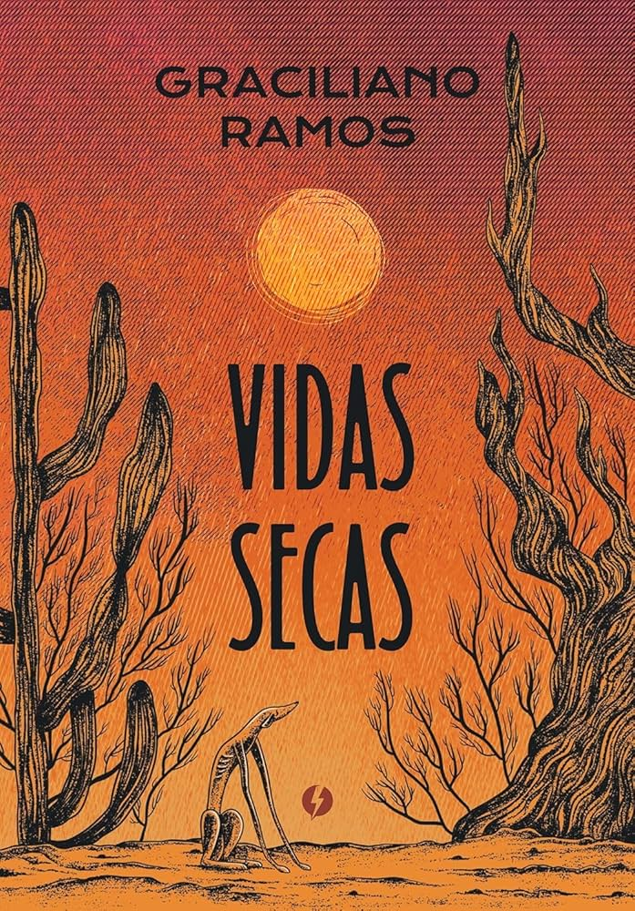

Vidas Secas

Autor: Graciliano Ramos
Ano de publicação: 1938
Gênero: Romance regionalista (2ª fase do Modernismo brasileiro)
Escola literária: Modernismo
Contexto da obra
A obra retrata a dura realidade do sertão nordestino, marcada pela seca, pela pobreza e pela desigualdade social. Faz parte do chamado Romance de 30, período em que escritores brasileiros abordaram questões sociais com forte crítica à realidade do país.
Personagens principais
- Fabiano
- Sinhá Vitória
- Os dois filhos do casal
- Baleia (a cadela da família)
- O Soldado Amarelo
Temas principais
- Seca e sofrimento no sertão
- Miséria e exclusão social
- Desigualdade
- Falta de acesso à educação
- Desumanização
Sobre o livro
Livro formado por 13 capítulos que podem ser lidos quase como contos independentes. Não é uma narrativa totalmente linear como os romances tradicionais. A obra tem estrutura fragmentada devido a uma estratégia artística e temática fundamental. Onde os capítulos funcionam como contos autônomos podem ser lidos em diferentes ordens sem perder o sentido. Essa estratégia tem várias finalidades, representar como a vida nômade e instável (ciclo da seca) entre outros aspectos para fragmentar um reflexo direto da desumanização e da instabilidade imposta pela miséria e pela seca.
Personagem
Baleia é uma das personagens mais marcantes.
A cachorra Baleia é uma das personagens mais humanas da obra. O capítulo da morte dela é um dos mais emocionantes da literatura brasileira devido a sua imagem marcante e comovente. Simbolizando pureza e o afeto em contraste com a brutalidade do ambiente, humanizada intensamente pelo ator.
Por que Baleia é considerada uma das personagens mais importantes?
Porque atua como o centro emocional e afetivo da família de retirantes, sendo, paradoxalmente, a criatura mais “humana” da narrativa.
Humanização da cachorra Baleia
A humanização da cachorra Baleia, representa o auge da sensibilidade e da dignidade humana em um cenário de aridez, miséria e animalização dos seres humanos. Ela funciona como um espelho emocional da família, sendo mais sensível e expressiva que os próprios humanos. A humanização da cadela Baleia é um recurso literário utilizado por Graciliano Ramos para evidenciar que, sob condições de extrema miséria, a sensibilidade e a pureza acabam restritas ao plano animal. O autor estabelece uma crítica social ao demonstrar que a opressão e a exploração retiram a dignidade do sertanejo, provocando um processo de animalização do homem. Assim, a capacidade de sonhar e a preservação de traços humanizados são deslocadas para a cadela, evidenciando o grau de desumanização imposto pela estrutura social aos personagens humanos da obra.